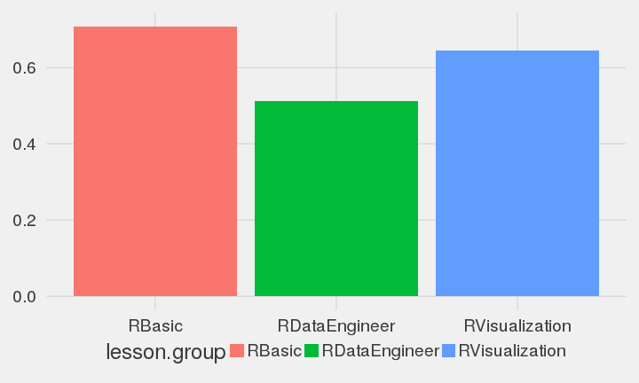
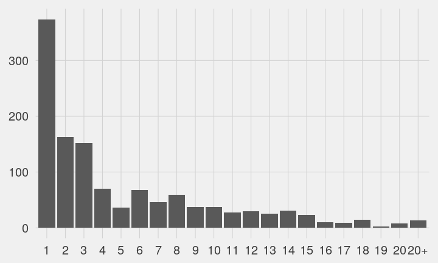
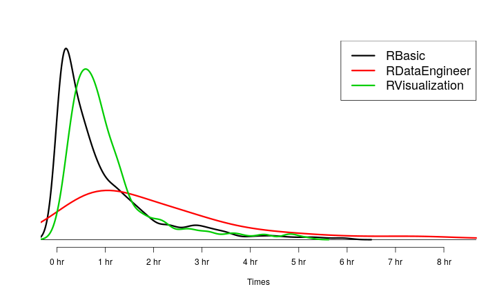
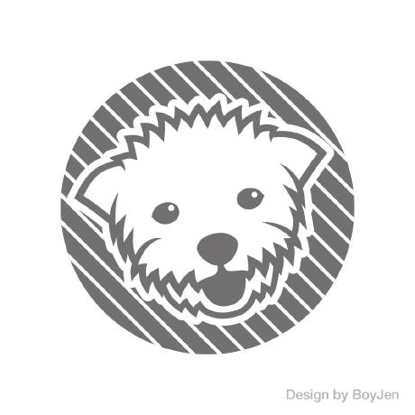

從R 語言翻轉教室到機器學習
Wush Wu
Taiwan R User Group
R 是什麼？
和其他工具相比，R 的特色
- R 有非常先進的數據視覺化系統
- R 有很多的進階數據分析工具
- R 是完整的資料科學解決方案
R 能提升資料科學團隊的生產力
資料的收集
library(quantmod)
getSymbols("^TWII")
head(TWII)
[1] "TWII"
| TWII.Open | TWII.High | TWII.Low | TWII.Close | TWII.Volume | TWII.Adjusted |
|---|---|---|---|---|---|
| 7871.41 | 7937.26 | 7843.60 | 7920.80 | 5710600 | 7920.776 |
| 7954.96 | 7999.42 | 7917.30 | 7917.30 | 5951400 | 7917.276 |
| 7929.89 | 7955.90 | 7901.24 | 7934.51 | 5717400 | 7934.486 |
| 7940.20 | 7942.23 | 7821.71 | 7835.57 | 5181400 | 7835.546 |
| 7778.57 | 7797.57 | 7736.11 | 7736.71 | 4292400 | 7736.687 |
| 7778.38 | 7827.93 | 7778.38 | 7790.01 | 4516000 | 7789.987 |
資料的處理、分析: AirbnB uses R to scale data science
- 開發Rbnb 套件
- 使用者：Airbnb's engineering, data science, analytics and user experience teams
- 功能：從Hadoop / SQL中撈取資料到R、處理Missing Data、計算常用的敘述統計、資料整合
- 結果：
溝通、報表
- Reproducible Research
- R Markdown
- R Notebook
- Jupyter ir-kernel
整個團隊都用R 之後
- 共同的工作內容可以包裝成R 套件來共同使用
- 實驗的可重複性
和其他工具相比，R 的特色
- R 有非常先進的數據視覺化系統
- R 有很多的進階數據分析工具
- R 是完整的資料科學解決方案
- R 可以提升資料科學團隊的生產力
學R 與推廣R 的挑戰
R 為什麼難學？R語言的設計
- 沒有GUI （吃英文打字）
- R 的官方文件對新手不友善
- R 的內建說明(help)不是針對非程式設計師
- 函數的名稱不一致
- 同樣的事情可以用太多種方法達成
- 資料結構複雜
- 物件導向複雜
R 為什麼難學？學習者的心態
- 學R 的同學通常都不具備程式背景
- R 不是針對程式設計師所設計
- 同學學R 的心態
- 資料才是主角
- R 的角色只是工具，深入學R 的報酬很低
R 為什麼難學？學R不只是學R
- 一個初學者要能善用R ，需要：
- 理解人和程式的溝通方法
- 理解數據分析的方法
- 理解R 處理資料的語法
直接教應用的挑戰
- 如何讓同學瞭解背後的原理
- 不懂原理的學生，碰到沒教的資料就投降
資料結構相關問題
執行迴歸分析，產生下列表單，想擷取第一欄位（Estimate）
因為有出現 NA 的情況，無法完整的將第一欄位擷取出來！
（有很多組需要執行，每組所估算出的 Beta 值長度不一）
希望能保留完整六個 Beta 值
（Intercept,data[,2],data[,3],data[,i],data[,j],data[,i]:data[,j]）
想請教版上先進，可以如何達到這的目標，謝謝各位
直接教語法的困難：
- 程式是工具，同學很難持續去學一個「現在沒有在用」的工具
- 背誦指令很困難、很無聊
- 教學形式很挑戰：
- 演講：聽過就忘了
- 帶著做：跟不上就放空了
R 關於例外處理
然後我想略過這個錯誤，繼續執行或是再執行一次這一行程式碼嗎？
因為目前遇到的狀況是，同樣的參數，有時會有錯誤訊息，
有時沒有，所以我想當錯誤發生時，略過他。
以下是出現錯誤時的錯誤訊息：
錯誤在UseMethod("xmlNamespaceDefinitions") :
沒有適用的方法可將 'xmlNamespaceDefinitions' 套用到 "NULL" 類別的物件
學習與教學上的挑戰
- R 處理資料時的所需知識很零碎、無系統
- 學生的程度差異很大
- 沒背景的學生，光學語法就忙不過來
- 有背景的學生，會想聽很多深入的知識
R 語言翻轉教室
Live Demo: 在R學R

{kind=link}
不一樣的學習體驗
- 利用問答、過關的方式，刺激學習動機
- 問題的設計由淺入深
- 每個章節的最後，都有「真實資料處理」的練習
- 同學可以依照自己喜歡的速度學習
01-RBasic-02-Data-Structure-Vectors
# 社會服務業自民國87至民國91年的年度用電量（度）
year1 <- 87:91
power1 <- c(6097059332, 6425887925, 6982579022, 7323992602.53436, 7954239517)
# 製造業自民國87至民國91年的年度用電量（度）
power2 <- c(59090445718, 61981666330, 67378329131, 66127460204.6482, 69696372914.6949)
# 請同學選出年度(`year1`)中，社會服務業的的用電量超過`7e9` 的年份。
# （`7e9`是R 的科學符號，代表`7 * 10^9`）
year1.answer1 <- <請填寫你的程式碼>
# 接著請同學計算「社會服務業從民國87年到91年的平均用電量」
power1.mean <- <請填寫你的程式碼>
02-RDataEngineer-01-Parsing
# 這是從 <http://data.gov.tw/node/7769> 下載的海盜通報資料
# 由於這份文件並沒有遵循任何已知的常見格式
# 所以我們必須要利用這章所學的技巧
# 才能從中翠取出資訊
# 首先，我們把該檔案載入到R 之中
pirate_info <- readLines(file(pirate_path, encoding = <請填寫正確的encoding>))
02-RDataEngineer-06-Join
#' 請用各種方式讀取`gdp_path`的資料、整理資料，並把最後的結果存到變數`gdp`。
#' 提示：`gdp_path`中的第一欄數據是年/季、第二欄數據是該季的GDP(百萬)
...
#' cl_info的資料包含各家銀行的房貸餘額（mortgage_bal）資訊與資料的時間（data_dt）。
#' 請用各種方法整理cl_info的資料，把最後的結果整理至`cl_info_year`
...
#' 最後請同學用這門課程所學的技術整合`gdp`與`cl_info`的資料，
#' 計算出房貸餘額與gdp的比率（mortgage_total_bal / gdp）。
給魚吃，也教怎麼釣魚
- 我們介紹套件，我們也介紹怎麼摸套件
vignetteshelp- 閱讀函數的簽名式
example
限制
- 教材只專注於：「R 處理資料的語法」
- 教材不教資料分析的方法、統計
- 教材沒辦法很好的教授「人與程式的溝通邏輯」
- 但是是很好的練習
課程內容：
- 00-Hello-DataScienceAndR
- 01-RBasic
- 02-RDataEngineer
- 03-RVisualization
- Optional-Programming
- Project-ROpenData
設計理念
- 資料科學團隊的Hello World
- 分析技術則不適合在翻轉教室中教授
如何找到R語言翻轉教室？
- 請Google:
R語言翻轉教室或直接造訪： http://DataScienceAndR.org - 歡迎各界來信：wush@datascienceandr.org
- 對於教材有任何問題或指教
- 來信索取雲端伺服器的測試用帳號
- 課堂的老師希望與我們合作，使用學生的追蹤資料
教材，就是越多人用過越成功

- 整套教材由Wush Wu、Chih Cheng Liang、Cheng-Yu Lin和Johnson Hsieh製作，以及其他的貢獻群，以創用CC 姓名標示-相同方式分享 3.0 台灣 授權條款釋出
使用統計
使用統計
- 時間範圍：從2016-02-13起至2016-07-15
- 使用者人數估計：1238
- 使用者進入課程的次數：9528
- 使用者完成課程的次數：5301
各單元的難度

使用者的學習深度

R語言翻轉教室要學多久？

如何製作互動課程？
Swirl Project
- 撰寫以下內容：
- 說明文字
- 預期答案
- 檢查
- 翻轉教室用的swirl不一樣：
lesson.yaml
- Class: meta
Course: DataScienceAndR
Lesson: 00-Hello-DataScienceAndR
Author: Wush Wu
Type: Standard
Organization: Taiwan R User Group
Version: 2.3.1.2
- Class: text
Output: |
能夠讀到這段中文字的同學，可以直接輸入enter進入下一個關卡。
If you are windows user and you cannot read the chinese
characters, please press `ESC` to exit swirl and execute the
command `Sys.setlocale(locale = \"cht\")`.
cmd_question
- Class: cmd_question
Output: 現在請各位同學查詢`chol2inv`的說明。
CorrectAnswer: help(chol2inv)
AnswerTests: any_of_exprs("?chol2inv", "help(chol2inv)")
Hint: 還記得`?`或`help`嗎？
mult_question
- Class: mult_question
Output: |
這裡測試一下同學懂不懂assignment的意思。
請問現在如果 我們在R 的console中輸入`a - 1`，會顯示什麼呢？
AnswerChoices: 1;2;"不會顯示";"4"
CorrectAnswer: 1
AnswerTests: omnitest(correctVal= '1')
script
- Class: script
Output: |
最後我們想請同學試試看用今天所學的方法，整理台電的公開數據。
請同學在完成之後存檔，並輸入`submit()`來檢查結果是否符合預期。
如果同學在檔案中看到亂碼，請使用Rstudio
左上角的File -> Reopen With Encoding... -> 選取：UTF-8
Script: RBasic-02-HW.R
AnswerTests: rbasic_02_hw_test()
課程架構
DataScienceAndR/
01-RBasic-02-Data-Structure-Vectors/
customTests.R
initLesson.R
lesson.yaml
scripts/
RBasic-02-HW.R
RBasic-02-HW-correct.R
檢查同學的答案
omnitestany_of_exprs- My implementations:
跨平台的中文教材
- Github Flow + Continuous Integration
- 測試程序：.test_course.R
- 分成 commit (Test Difference) / push (Test All)
- Travis CI + R Guide
- Linux: .travis.yml
- OS X: .travis.yml
- Appveyor + R-appveyor
- Windows: .appveyor.yml
部署
- Github http page
https://github.com/<username>/<project>gh-pages分支的內容會自動上網http://<username>.github.io/<project>
- R 套件：
miniCRAN - MRAN Time Machine: https://mran.microsoft.com/timemachine
總結
- R 是一個很適合資料科學團隊的工具
- R語言翻轉教室是一套：很適合自學「用R 做資料處理入門」的程式
- 可以運作在3.2.5 以上的單機R
- 可以跟我申請雲端帳號試用（ wush@datascienceandr.org ）
- R語言翻轉教室是一套開放、自由的教材
- 任何人都可以在符合創用CC姓名標示、相同形式分享的形式下自由使用
- 任何人都可以貢獻教案，並且基於R語言翻轉教室，發展自己的教材
關於我
- 台大電機所博士生
- Taiwan R User Group
- 希望大家可以更舒服的學R
- 希望能貢獻一點點
- 喜歡寫程式
- 有一些資料分析的實務經驗
- 網路廣告
- 高效能運算

Q&A
R vs Python
R 很慢嗎？
- Yes and No
- R 的預設設定，的確不快
- R 更重視正確性：fMRI
- 你知道為什麼程式會跑得慢嗎？
- 硬體？演算法？實作（程式語言）？
- Benchmark 可信嗎？ https://github.com/szilard/benchm-ml
- In-Memory的狀況下，R 是非常適合general purpose的資料分析需求
- 而且速度應是可接受的
- R 可以跑得非常快（R 皮 C++骨）
- 作業系統 + 套件 + 調整 + 了解你的需求